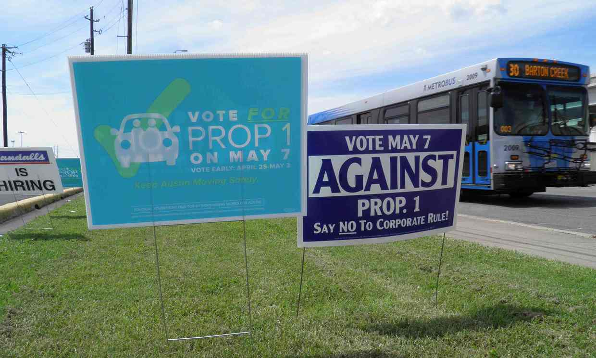

Uber, Lyft Pull Out of Austin

Ride-sharing services Uber and Lyft are suspending operations in Austin, Texas, after the city’s voters rejected a proposal that would have allowed the companies to self-regulate their drivers.
Instead, the voters upheld stricter regulations that the city council passed in December: ride-sharing drivers are required to pass fingerprint-based background checks, clearly mark their cars with the ride-sharing company’s logo, and not pick up or drop off their passengers in certain lanes of the city’s streets.
Uber and Lyft wanted those regulations to be repealed, and if Proposition 1, which went to the polls on Saturday, had passed, they would have had their way. Instead, despite combined spending of nearly $9m against opposition of just over $100,000, voters rejected the proposition 56–44.
In a statement, Lyft said: “Lyft and Austin are a perfect match and we want to stay in the city. Unfortunately, the rules passed by City Council don’t allow true ride sharing to operate. Instead, they make it harder for part-time drivers, the heart of Lyft’s peer-to-peer model, to get on the road and harder for passengers to get a ride. Because of this, we have to take a stand for a long-term path forward that lets ride sharing continue to grow across the country, and will pause operations in Austin on Monday, 9 Ma.”